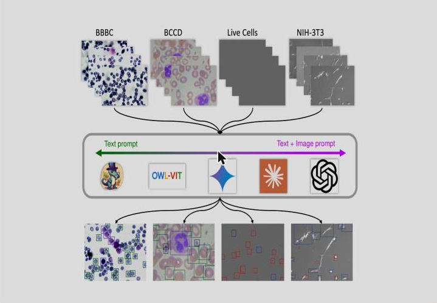
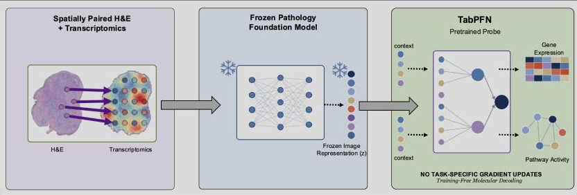
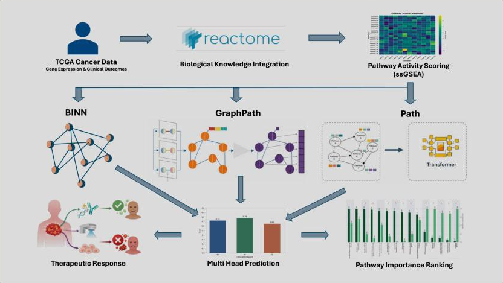
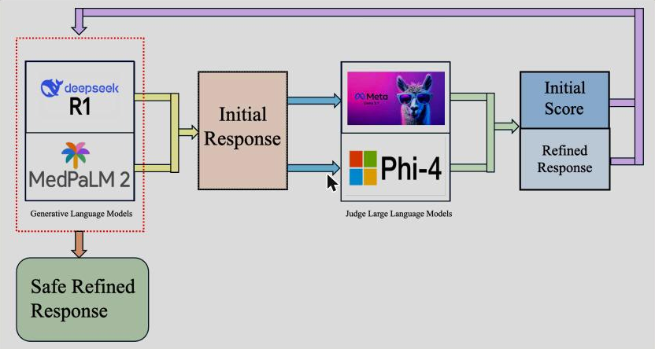
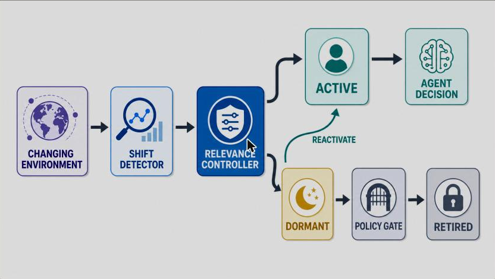
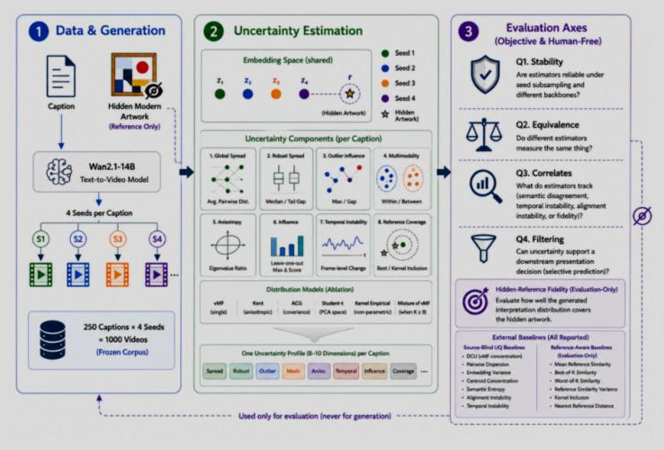

Ushashi Bhattacharjee
Undergraduate Senior · M.Sc. Student
Iowa State University
Email: ushashi@iastate.edu
About
I’m an undergraduate senior at Iowa State University studying Bioinformatics and Computational Biology, and I am also pursuing an M.Sc. in Mechanical Engineering. My research sits at the intersection of computational biology, computer vision, and AI.
I currently work in the Integrated Design and Engineering Analysis Laboratory (IDEA Lab), where I automate Atomic Force Microscopy (AFM) workflows and contribute to few-shot detection methods for microscopy. Earlier work includes machine learning for plant phenotyping, LLM-based tools for healthcare and sustainability, and sustainable energy systems analysis.
Education:
- Iowa State University — M.Sc. in Mechanical Engineering (Jan 2026 – Present)
- Iowa State University — B.Sc. in Bioinformatics and Computational Biology (Aug 2023 – Present)
- Minnesota State University Moorhead — B.Sc. in Biochemistry and Biotechnology (Jan 2023 – May 2023)
Research
I work at the intersection of computational biology, computer vision, and AI, from automating atomic force microscopy and few-shot cell detection to trustworthy medical AI and LLM tools for sustainability. The label on the left of each paper shows its type: journal, conference, workshop, poster or preprint. Click any title for the paper, and use the quote icon for a BibTeX citation. The full list is on Google Scholar.









Projects
- Discovery and Isolation of Phage Huraira (Spring 2023)
- Characterized Phage Huraira, a Siphoviridae family phage with a long, flexible, non-contractile tail.
- Isolated at -12°C, indicating potential adaptations to cold environments; plaque morphology analyzed, though sequencing remains incomplete.
- Researched genome sequencing to determine genetic composition and potential applications.
Experience
- Integrated Design and Engineering Analysis Laboratory (IDEA Lab), Iowa State University — May 2025 – Present
Undergraduate Research Assistant- Automating Atomic Force Microscopy (AFM) workflows using GUI scripting and model-assisted optimization.
- Contributing to few-shot object detection techniques for microscopic defect classification in nanostructures.
- Assisting in AFM tip parameter tuning and integration of LLM-driven suggestions for imaging accuracy.
- Dior Kelley Lab, Iowa State University — Apr 2025 – Sep 2025
Undergraduate Researcher- Identified plant shoots and kernels using machine learning models.
- Contributed to image-based phenotyping techniques for agricultural research.
- Assisted in data annotation, model training, and evaluation for crop trait detection.
- Sustainable Energy Systems Analysis Lab (SESA), Iowa State University — May 2024 – Mar 2025
Undergraduate Research Assistant- Reviewed sustainable aviation fuel (SAF) policies and market incentives to improve profitability.
- Analyzed biochemical strategies in anaerobic digestion to evaluate process efficiency.
- Developed an AI-driven waste sorting system using LLaMA 3.2 Vision to enhance sustainable waste management.
- Model Optimization Development Evaluation Libraries Software (MODELS Lab), Iowa State University — Apr 2024 – Jan 2025
Undergraduate Researcher- Developed climate-based software tools in Python to model and optimize agricultural processes.
- Developed a web-based application for real-time video compression using H.266 encoding.
- Crop Bioengineering Center, Iowa State University — May 2024 – Mar 2025
Undergraduate Greenhouse Assistant- Gained hands-on experience planting and cultivating crops in a controlled greenhouse environment.
- Collected and organized crop growth and environmental data to support research.
- Assisted in data analysis and experimental setup optimization.
- Translational AI Center (TrAC), Iowa State University — May 2025 – Aug 2025
REU-TrACE Intern- Contributed to AI research projects focused on real-world applications.
- Participated in a bootcamp on machine learning, data science and professional development.
- Visited tech companies and research centers to explore industry AI applications.
Honors & Awards
- Undergraduate Conference Travel Fund, Office of the Senior Vice President for Student Affairs, Iowa State University (Fall 2025)
- LAS Dean’s High Impact Award for Undergraduate Research (Spring 2025)
- George Washington Carver “I Can” Poster Challenge — 1st place, CALS, Iowa State University (Spring 2025)
- Dean’s List, Iowa State University (Fall 2024)
- Dean’s List, Minnesota State University Moorhead (Spring 2023)
Academic Service
Program Committee
Ethics Review
Conference Reviewer
- Indian Conference on Computer Vision, Graphics and Image Processing (ICVGIP) 2026
- Machine Learning for Health (ML4H) 2026 — Emergency Reviewer
Workshop Reviewer
- AI4GOOD Workshop @ International Conference on Machine Learning (ICML) 2026
- LatinX in Computer Vision (LatinX in CVPR 2025) Workshop @ IEEE/CVF Conference on Computer Vision and Pattern Recognition (CVPR) 2025
Volunteer
- Student Volunteer, Student Health and Wellness, Iowa State University (Jan – May 2024)
- Undergraduate Research Volunteer of Neuroscience, Minnesota State University Moorhead (May – Jun 2023)
- Student Volunteer, Feed My Starving Children (Jan – May 2023)
- Volunteer Staff, Graduate Student Council, North Dakota State University (Jan – Apr 2023)